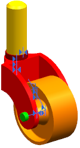
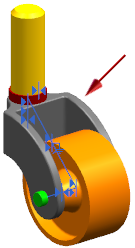

使用相关组件替换组件
使用相关组件替换组件
本示例将展示如何使用替换组件命令在保持装配约束等关系的同时，将某一组件替换为另一组件。在铸件装配中，您将用从相同组件中派生的不同叉替换现有叉。

-
在图形窗口中，右键单击该叉并选择替换组件。
将显示替换组件对话框，该叉将选定为要替换的组件。

-
在替换件组中，选择浏览
 。
。 -
在部件名对话框中，浏览替换叉的位置，选中该叉并单击确定。
-
在替换组件对话框的设置组中，确保已选中维持关系复选框。
-
单击确定。
该叉已替换。由于替换叉是原始叉的版本，因此 NX 可成功维持装配约束等关系。
